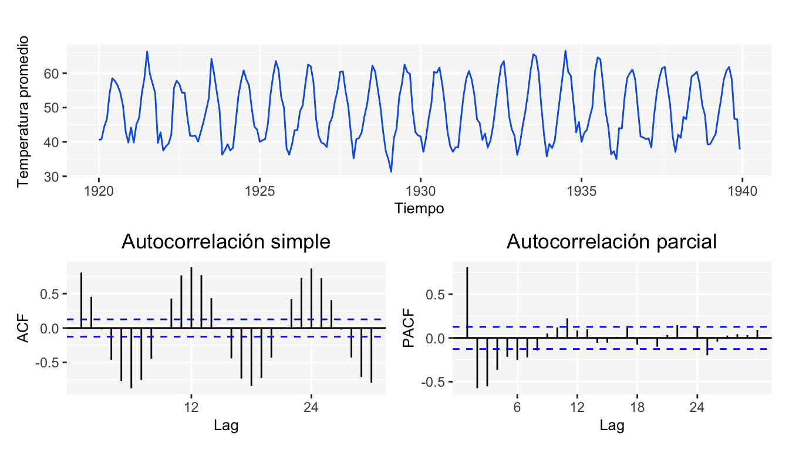

Capítulo 2 Funciones de autocovarianza y autocorrelación
Como se mencionó en el apartado anterior, tenemos que para un proceso estacionario \(X_t\), su esperanza es \(E[X_t] = \mu\) y su varianza \(Var[X_t]=E[X_t-\mu]^2=\sigma^2\) las cuales son constantes; así como las covarianzas \(Cov(X_t,X_s)\), que son funciones que solamente dependen del tiempo que transcurre entre \(t\) y \(s\); entonces en este caso podemos escribir la covarianza entre \(X_t\) y \(X_{t+k}\) como:
\[ \gamma_k=Cov(X_t,X_{t+k})=E(X_t-\mu)(X_{t+k}-\mu) \]
Y su correlación como: \[ \rho_k =\frac{Cov(X_t,X_{t+k})}{\sqrt{Var(X_t)}\sqrt{Var(X_{t+k})}}=\frac{\gamma_k}{\gamma_0} \]
donde, \(Var(X_t) = Var(X_{t+k}) = \gamma_0\).
También conocida como la función de autocorrelación (ACF), la cual es una medida de la relación para los valores de la serie respecto a los valores de esta misma, observados \(k-t\) unidades de tiempo.
La función de autocorrelación tiene las siguientes propiedades:
- \(\rho_0=1\)
- \(-1\leq\rho_j\leq 1\)
- \(\rho_j=\rho_{-j}\)
En general, se utiliza la función de autocorrelación muestral \(r_k\), la cual queda determinada por la siguiente expresión
\[ r_k=\frac{\sum\limits_{t = k+1}^n (X_t-\bar{X})(X_{t-k}-\bar{X})}{\sum\limits_{t = 1}^n(X_t-\bar{X})^2} \]
Para \(k = 1, 2, \dots\) y donde \(\bar{X}\) es la media de las observaciones.
2.1 Función de autocorrelación parcial
La función de correlación parcial estima la correlación entre una observación \(k\) tiempos después de la observación actual removiendo los efectos de las correlaciones de las observaciones intermedias; es decir:
\[ \pi_j=corr(X_j,X_{j-k}|X_{j-1},X_{j-2},...X_{j-k-1}) \]
Para este caso, el estimador apropiado es la función de autocorrelación parcial muestral Cryer and Chan (2008), el cual puede obtenerse utilizando \(r_k\) para la siguiente expresión recursiva.
\[ \pi_j=\frac{\rho_j-\sum\limits_{k = 1}^{j-1}\pi_{j-1, k}\rho_{j-k}}{1-\sum\limits_{k = 1}^{j-1}\pi_{j-1, k}\rho_k} \] donde \(\pi_{j, k} = \pi_{j-1, k}-\pi_{j}\pi_{j-1, j-k}\) para \(k = 1,2, \dots, j-1\).
2.2 Correlograma
Una vez calculadas las funciones de autocorrelación y autocorrelación parcial, se grafican contra los diferentes rezagos para obtener los correlogramas. Estos son serán de gran utilidad para la identificación del modelo, tal como se menciona en el capítulo 10 y en el complemento a este material SeriesTCode. Como ejemplo, se presentan los gráficos correspondientes a los datos de nottem.

2.3 Prueba de Ljung-Box
Esta prueba permite probar en forma conjunta que todos los coeficientes de autocorrelación son simultáneamente iguales a cero. La prueba está definida como
\[ LB=n(n+2)\sum_{k=1}^m\frac{\hat\rho_k^2}{n-k}\sim \chi_{(m)}^2 \] donde \(n\) es el tamaño de la muestra, \(m\) la longitud del rezago.
Las hipótesis de esta prueba son:
\[ \begin{array}{cc} H_0:\mbox{Los coeficientes de autocorrelación son simultáneamente iguales a cero}\\ H_1: \mbox{Alguno de los coeficientes de autocorrelación es distinto de cero} \end{array} \]
Entonces si \(LB\) excede el valor crítico de la tabla \(Ji\) cuadrada al nivel de significancia seleccionado, no se acepta la hipótesis de que todos los coeficientes de autocorrelación son iguales a cero, por lo tanto al menos algunos de ellos deben ser diferentes de cero1.
References
Cryer, Jonathan D, and Kung-Sik Chan. 2008. Time Series Analysis: With Applications in R. Springer Science & Business Media.
Originalmente la prueba esta diseñada para comprobar estadísticamente si las observaciones son independientes entre sí, bajo esta hipótesis, los coeficientes de correlación serán cero y el estadístico \(LB\) será cercano a cero. Esta prueba es de gran ayuda para ver la calidad del modelo que se aplique y para validar las hipótesis que se puedan requerir en la construcción de intervalos de predicción. Se hablará más de su uso en el capítulo 10.↩︎